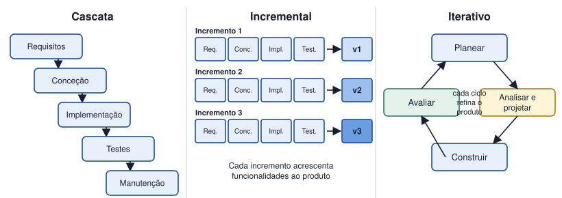

Tema 7 · Desenvolvimento de software
Modelos de desenvolvimento de software
Modelo em cascata, incremental e iterativo
Um modelo de desenvolvimento define a forma como as fases do ciclo de vida são organizadas no tempo. Não há um modelo universalmente melhor: depende do projeto.

Modelo em cascata
As fases são executadas uma a seguir à outra, e só se avança quando a anterior está concluída e aprovada. É simples de gerir e de documentar, mas pouco flexível: o cliente só vê o sistema no fim.
Modelo incremental
O sistema é construído em partes. Cada incremento percorre as fases e é entregue ao cliente, acrescentando funcionalidades à versão anterior. Permite entregas antecipadas e menor risco.
Modelo iterativo
Constrói-se uma versão inicial incompleta e repete-se o ciclo planear, analisar e projetar, construir e avaliar, refinando o sistema em cada volta. Adapta-se bem quando os requisitos mudam ou não são totalmente conhecidos.
| Cascata | Incremental | Iterativo | |
|---|---|---|---|
| Requisitos | Estáveis e conhecidos | Conhecidos, divisíveis em partes | Incertos ou em evolução |
| Entregas | Uma, no fim | Várias, por incrementos | Versões sucessivas |
| Participação do cliente | Início e fim | A cada entrega | Contínua |
| Risco | Elevado se houver mudanças | Moderado | Reduzido |
Atividade
Comparar modelos de desenvolvimento e selecionar o mais adequado para diferentes projetos
Para cada projeto, escolha o modelo de desenvolvimento mais adequado (cascata, incremental ou iterativo) e justifique.
- Software de controlo de bilhética de uma rede de metro, com requisitos fixados por regulamento.
- Aplicação móvel de uma startup que ainda não sabe bem o que os utilizadores vão valorizar.
- Sistema de gestão para uma empresa com módulos independentes: clientes, stock e faturação, a entregar por fases.
- Site de uma associação local, com poucas páginas e conteúdos já definidos.
Ver proposta de resolução
| Projeto | Modelo | Justificação |
|---|---|---|
| a) Bilhética do metro | Cascata | Requisitos estáveis e regulados; exige documentação e aprovação em cada fase. |
| b) Aplicação da startup | Iterativo | Os requisitos vão ser descobertos com o feedback dos utilizadores. |
| c) Gestão empresarial | Incremental | Os módulos são independentes e podem ser entregues e usados por etapas. |
| d) Site da associação | Cascata (ou incremental) | Projeto pequeno e bem definido; a simplicidade compensa. |
Em resumo
- Cascata: fases sequenciais, requisitos estáveis.
- Incremental: entregas por partes, cada uma acrescenta funcionalidades.
- Iterativo: ciclos repetidos que refinam o sistema, ideal com requisitos incertos.
- A escolha depende da estabilidade dos requisitos, do risco e da participação do cliente.